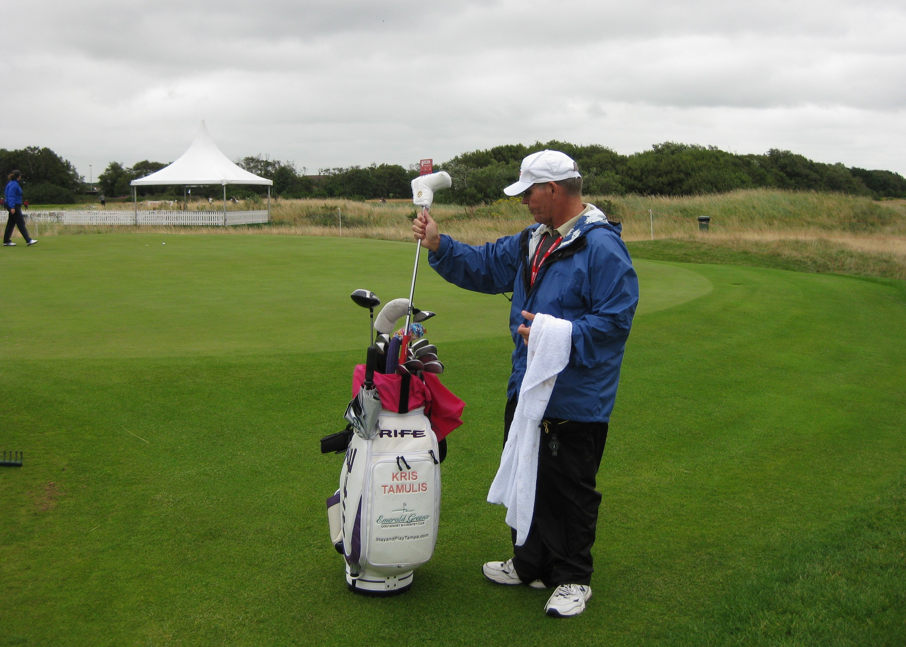

|
|
|
|
Women's British Open - Wednesday July 29th - Practice
The weather forecast was absolutely foul. I nearly stayed home, but made a last minute decision to go. Arrived at the course at about 10.00am in my waterproof, thermal socks to find that I wasn't going to need them. Found Becky Brewerton teeing off on 14 with an entirely LET practice group. She recognized me and said hello, asked how I was. Anna Nordqvist was up next still dressed all in black even without the waterproofs. Eun He Ji, our new US Womens Open Champion was practising on her own fully clad in bright blue waterproofs. Her caddie is not taller than she is, but very personable. Momoko Ueda was next up, resplendent in her salmon pink waterproofs. Talked a bit with Terry Mac, asking how he was feeling. He said he was much better but that the bug had taken so much out of his body that a load of other parts were bothering him. His neck in particular was giving him gip, but he was going to get through it.
{kind=link}
At the 6th green/7th tee came across Life on Tour Larry with his bag Kris Tamulis. They had decided to miss the 7th to 13th stretch of holes, but were dithering about cutting over. Larry said if they were guys they would just have barged over. As women, they didn't want to upset anyone but didn't want to become a foursome rather than a twosome. They ended up in a foursome with a couple of Euros.
Cristie Kerr was playing with Minnie Blomqvist. She had about three goes at her approach shot on the 6th but wasn't happy with any of them. Se Ri was playing with one of her Korean collegues and was jabbering to her in Korean. As soon as she joined her caddie she switched into English. It was better than I hear her speak on TV. It seemed to be a discussion about clothes and whether clothes of the right size had been waiting somewhere for someone and the caddie seemed to suggest she should carry her vital statistics around with her as a matter of course!
Karin Sjodin was practising with Tutta. Dave Brooker is no longer wearing his moon boot thingy. Tutta's mum watched her tee off at 17. As I approached the chipping green came across Team Wie. Patrick, her latest ex PGA caddie, was there with David Leadbetter, which is her legal maximum. However Mr and Mrs Wie were there as well in defiance of the rules. No suggestion of anyone doing anything about it.
A large Bentley pulled up outside the clubhouse with the registration number PUT 3. Turns out it was Peter Alliss arriving. He gave the keys to someone to park it properly for him whilst he sauntered into the clubhouse. Not long afterwards Beth Daniel and Meg Mallon arrived in a courtesy car and started chatting with all and sundry. Over at the 1st tee Karen Stupples was teeing off with Kris Tschetter. They were discussing child care provision as they made their way up the fairway. Decided it was time to make my exit for the day.